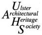
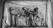

[Extracts from Irish Church Monuments, by Homan Potteron, published by the Ulster Architectural Heritage Society in 1975.]

He was the son of William Kirk, a native of Edinburgh, who settled
in Newry, and later in Cork, where Thomas was born. He studied
at the Dublin Society's Schools where he won prizes in 1797 and
1800 and later worked for Henry Darley (q.v.) the stone-cutter.
One of his earliest commissions was the statue of Nelson for the
Pillar in Sackville Street, Dublin. Indeed Kirk was destined to
execute several such lofty heroes for monuments throughout the
country, and became one of the most important Irish sculptors
working in Ireland in the first half of the century. He executed
numerous church memorials throughout the country, most of which
are on a modest scale, although many incorporate the most charming
reliefs executed with varying degrees of success. His favourite
relief was one of The Good Samaritan, which suited most particularly
memorials to either doctors or clergymen. These reliefs frequently
measure no more than some eighteen inches high and two feet wide;
and of their type in Ireland, they are almost peculiar only to
Kirk and his son, Joseph Robinson Kirk (q.v.). Although I have
been unable to enter BALLINROBE church, County Mayo, the memorial
to Thomas Routtledge that I have seen through the window, and
which has a relief of the Good Samaritan, is almost certainly
by Kirk.
One of Kirk's most charming reliefs is on the memorial to Jane
Vernon (d. 1827) in CARLOW church. She was the wife of the Rector
of Carlow and died at the age of twenty-nine. The inscription
records that 'she excelled in sculpture, painting and an acquaintance
with the learned languages', and that by her death 'society lost
an ornament, the people of this town an active and zealous benefactress,
its youth a pious and christian instructress'. So Kirk, in the
relief, shows the poor and the young of Carlow come to mourn at
the urn which holds her remains. To the left are the tools of
Jane Vernon's accomplishments: a harp, an easel, a sculptor's
chisel; gazed upon by (probably) one of her children. The memorial
with a bust to the memory of Nathaniel Sneyd (d. 1833) in CAVAN
is in all probability by Kirk, as he executed a more elaborate
tomb for Sneyd in Christ Church Cathedral, Dublin (see below).
Also in CAVAN is the memorial to the Rev. Joseph Storey (d. 1838).
Here an angel flies heavenward above a relief which has many of
the details found on the Vernon relief. Again, figures mourn at
an urn; but Storey's artistic talents were obviously less apparent
than Jane Vernon's, as there is no easel, harp or half-sculpted
bust. The memorial to the Rev. George Hill (d. 1837) at COMBER,
County Down, has a relief of the Good Samaritan, and above it
a kneeling figure of Grief under a willow tree. There are several
memorials by Kirk in St. Anne's Church, DUBLIN, among them Rev.
Cotton, Bishop Dickinson, and Daniel McKay. In St. George's, DUBLIN,
the elaborate Greek revival tablet to the memory of John Chambers
(d. 1800) is signed by Kirk.
For his memorial to Thomas Abbott (d. 1837) in Christ Church Cathedral,
DUBLIN, Kirk has placed a statue of an orphan girl weeping at
an urn. The memorial was erected by the citizens of Dublin and
the inscription records that Abbott led 'a life universally devoted
to active benevolence, his time and thoughts were dedicated to
the service of the utterly forlorn and destitute. For seventeen
years he attended daily to the relief of their wants as honorary
secretary of the Mendicity Institution.' He died aged thirty seven
'of fever which found him in his daily work of mercy'. Also in
Christ Church is the memorial, with a bust, to the memory of Sir
Samuel Auchmuty (d. 1822).
In the crypt is the now mutilated tomb of Nathaniel Sneyd (d.
1833), generally regarded as being Kirk's masterpiece, which it
probably is. Sneyd, who 'perished by the indiscriminating violence
of an unhappy maniac' (he was shot in Westmoreland Street by John
Mason, the brother of a Dublin clergyman) is represented lying
dead with a female figure weeping over him. Chart, in his 'Story
of Dublin', described the 'fidelity of the details (as) really
wonderful'. In the north aisle of Christ Church is the unfinished
memorial to Sir John Stevenson (1843) who wrote the music for
Moore's Melodies. His monument has a bust (probably that exhibited
by Kirk at the R.H.A. in 1840) and a single choirboy. Originally
there were two choir boys, but the sculptor found such difficulty
in getting payment for his work that he removed the second chorister.
In St. Patrick's Cathedral is Kirk's memorial to Dr. Spray (d.1827),
who was 'peculiarly distinguished for the manner in which he sang
Sir John Stevenson's music'. Spray, who was Vicar Choral in both
cathedrals, is commemorated by a bust. Also in St. Patrick's is
Kirk's memorial to Thomas Ball (d.1826). In the Pro Cathedral,
DUBLIN, his monument to the Rev. Thomas Clarke has relief figures
of Religion and Charity on either side of an urn. This was Kirk's
first exhibited work when he showed it, according to Strickland,
as 'Piety and Chastity' (sic) at the Society of Artists in Hawkins
Street in 1810. The memorial to Thomas Dillon (d.1828), also in
the Pro-Cathedral, has a relief of the Good Samaritan, and may
safely be attributed to Kirk; and nearby the William and Ann Bayly
memorial is also probably by him. In DUNDALK, a larger Good Samaritan
than usual commemorates Dr. George Gillichan (1819); and in GREYABBEY,
County Down, an architectural tablet commemorates William Montgomery
(d.1831). The Bishop of Ossory, Rev. Robert Fowler, is commemorated
by a simple tablet in KILKENNY Cathedral.
Two Kirk memorials in KILRUCH, County Clare, are quite elaborate.
They commemorate the Rt. Hon. John Ormsby Vandeleur (d.1828) and
Lt. Col. Seymour Vandeleur. The George Pentland (d.1844) memorial
in the same church may also be by Kirk. Kirk's best small-scale
reliefs are in MONAGHAN. Both exhibited at the R.H.A. in 1843,
they commemorate members of the Rossmore family. Mary Anne Rossmore
(d.1807), the first wife of Warner William Westenra, Baron Rossmore,
is commemorated by a relief entitled 'The Parting Glance.' Lord
Rossmore, restrained by his son, takes his last look at his deceased
wife; at the foot of the death-bed a dog, symbolising fidelity.
One of their sons, the Hon. Charles Westenra, Lieutenant 8th Hussars,
is commemorated by 'The Soldier's Funeral', (Fig.64) charmingly
executed with a spurred boot reversed in the stirrup. Also in
MONAGHAN are tablets to Francis Cole (d.1833) and Richard Jackson
(d.1834). The James Wright (d.1817) memorial in NEWRY is signed
'T. Kirk Dublin'; and in ROSSCARBERY, County Cork, the Rev. Horatio
Townsend (d.1837) is commemorated by a Good Samaritan.
Go to Publications or
to Index
{kind=link}